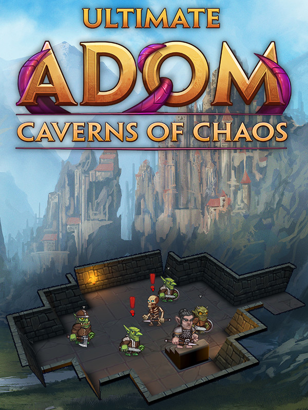

Ultimate ADOM - Caverns of Chaos
Ultimate ADOM - Caverns of Chaos
Details
|  | |
| Playtime | 46m 0s |
| Last Activity | 12/05/2021 22:18:43 |
| Added | 23/11/2021 11:42:06 |
| Modified | 20/05/2023 8:15:43 |
| Completion Status | Played |
| Library | Steam |
| Source | Steam |
| Platform | PC (Windows) |
| Release Date | 18/01/2021 |
| Community Score | |
| Critic Score | |
| User Score | |
| Genre | Adventure Indie Role-playing (RPG) Strategy |
| Developer | Team ADOM |
| Publisher | Team ADOM |
| Feature | Single Player |
| Links | Steam Official Website GOG |
| Tag | [EMT] Logo Missing [EMT] Video Micro missing |
Description
GET Orbital Bullet – The 360° Rogue-lite!
https://store.steampowered.com/app/1167680/Orbital_Bullet__The_360_Roguelite/
About the Game

The Save the World Edition contains Ultimate ADOM – Caverns of Chaos, the official soundtrack as well as 5 wallpapers and is a great way to show appreciation for the developers, while simultaneously supporting a good cause.
Assemble Entertainment will donate 10% of the proceeds for every sold Save the World Edition to the 'International Agency for Research on Cancer' (IARC) to stop the worlds corruption beyond Ancardia!
Join us in the battle against cancer and contribute your share to save the world!

After over 25 years, here comes the official sequel to classic ADOM.
Experience the modern sequel of the traditional roguelike dungeon-crawling classic. Enjoy unlimited replayability through endless procedurally generated dungeons, countless monsters, grafting, crafting and a vast amount of skill trees..DELVE INTO THE LORE
Evil has been vanquished. Peace has returned to Ancardia, and the peasants dare to dream once more of prosperity. Seven very different factions vie for control over the cataclysmic aftermath left behind by Andor Drakon’s defeat. And somewhere, deep down in an inhospitable cave, ChAoS is stirring again.
Pick up your blade, prepare your spells, check your daggers and ready your bow, for you are about to enter the ominous Caverns of Chaos. Choose your allegiance carefully, for you are nothing more than an expendable asset to the masters you choose.
Fight for a mercenary's glory and purse, for the justice of a folk in decline, for the light of purity or even for ChAoS itself. Every choice you make will determine how you approach the ever-changing Caverns of Chaos before you.

CLASSIC ROGUELIKE VIRTUES MEET MODERN FEATURES
 Endless procedurally generated dungeons, countless monsters, items and a grand selection of very different skills allow for unlimited replayability. Interactive surroundings! Topple braziers, push coffins, smash doors or turn them into wooden golems to (hopefully) serve your bidding. Choose or toggle between graphic mode and traditional ASCII at any time. Toggle between 3D mode and top down view, in ASCII or in the graphic mode. Intuitive control system will get rid of the need to memorize hundreds of keys. Though you can still do so, if you're into that. We are not judging.
Endless procedurally generated dungeons, countless monsters, items and a grand selection of very different skills allow for unlimited replayability. Interactive surroundings! Topple braziers, push coffins, smash doors or turn them into wooden golems to (hopefully) serve your bidding. Choose or toggle between graphic mode and traditional ASCII at any time. Toggle between 3D mode and top down view, in ASCII or in the graphic mode. Intuitive control system will get rid of the need to memorize hundreds of keys. Though you can still do so, if you're into that. We are not judging.
UNRIVALED COMPLEXITY AND CONTENT
A great variety of classes, genders, races and allegiances to choose from allow for extensive build diversity and change the way the game challenges you. NPCs will react differently, new quests will be open to you and the world may change completely based on your decisions. A deep magic system with several unique schools of magic and over 80 of spells to choose from, ranging from summoning demons to animating the very walls of the dungeon to aid you - the possibilities are endless. Over 380 skills in 25 skill trees and dozens of secret skills trees that are only waiting to be unlocked. A stealth system introduces a totally new way of playing the game: Instead of hacking or blasting all opposition to pieces you now can sneak past adversaries and avoid conflict. Turn yourself into an abomination and graft your enemies’ body parts on yourself. They won’t need them anymore, and what's better than wielding two swords? Two swords and an axe to harvest more body parts than ever before.
CHALLENGING AND UNCOMPROMISING, YET REWARDING
Countless options of how to tackle the dungeons awaiting you. Befriend or tame creatures, slay monsters, delve deeper or keep exploring and expanding the cavern levels you have already found. Over 200 different foes await, each requiring matching tactics. "Dying is part of the fun" - Each death is permanent. Your progress however will allow continuous improvement of future characters.